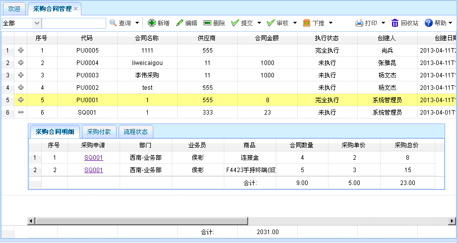

采购合同管理
采购合同管理
功能介绍：点击【采购合同管理】进入采购合同管理页面，如下图所示。功能主要包括：查询、新增、编辑、删除、提交、审核、下推。

图表3-5-1【采购合同管理】
图表3-5-1【采购合同管理】
还可查看采购合同明细、采购付款、流程状态信息。点击【采购申请】的字段，可查看其详细信息，还可查看采购申请明细、流程状态。 如下图所示。
图表3-5-2【采购申请】
【查询】：通过设置查询条件，查询出符合条件的数据，直接点击查询按钮即可列出相关信息。双击采购合同明细或采购付款或流程状态的信息，可对其进行编辑。
【新增】：点击新增按钮，如下图所示。新增完毕，点击保存。新增时，红色文本框为必填项、灰色文本框为默认，有搜索图案的要进行查询。可对采购合同明细、采购付款进行新增、删除、粘贴操作，并可查看流程状态。
图表4-5-4【新增】
【编辑】：选中某项采购合同信息，点击编辑按钮后，出现如下图所示内容，进行编辑、提交、审核操作。编辑时，灰色文本框为默认，有搜索图案的要进行查询。可对采购合同明细、采购付款进行新增、删除、粘贴操作，并可查看流程状态。
图表3-5-5【编辑】
【删除】：选中某项采购合同信息后，点击删除，即可删除该信息，已提交的单据不能删除。
【提交】：选中某项采购合同信息后，点击提交，可提交该信息，并且采购合同明细的采购单价不能小于或等于0，采购付款总金额不能大于合同总金额、必须录入付款明细信息。
【审核】：选中某项采购合同信息后，点击审核，可审核该信息，单据审核人不匹配和未提交的不能审核该单据。
【下推】：选中某项采购合同信息后，点击下推中的采购订单，如下图所示。点击保存，即可生成采购订单，未审核的不能生成采购订单。其中灰色文本框为默认。可对采购合同明细进行新增、删除、粘贴操作，并可查看流程状态。
图表3-5-6【采购订单生成】
 常见问题
常见问题
1、？
2、？
3、？